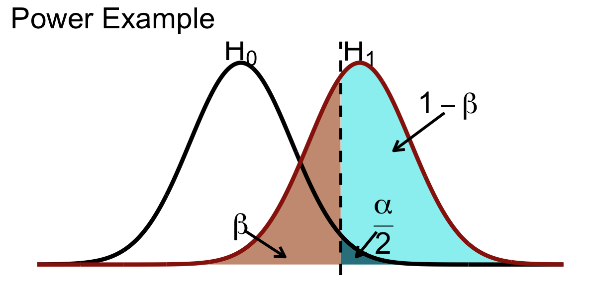
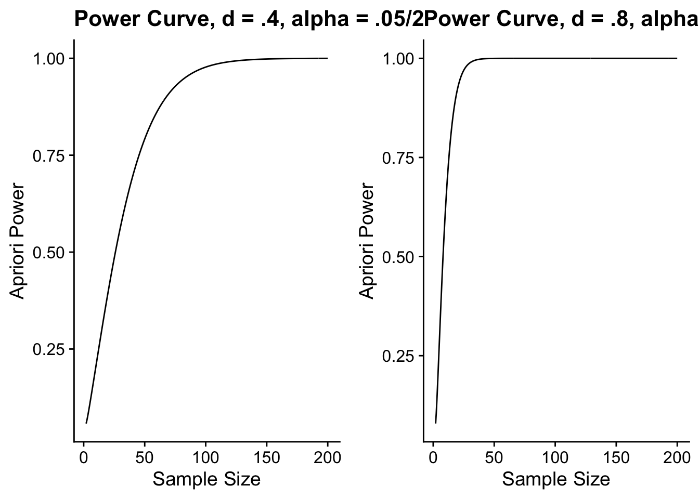

pacman::p_load(tidyverse, cowplot, glue)29 Power
I guess every superhero needs his theme music
Power is the answer to the second question for the previous section: “How strong would a potential treatment effect in a future experiment need to be in order for us to detect it?” More precisely it is the likelihood that a study will detect an effect when there is an effect. Mathematically we can express power as \(1 - \beta\), where \(\beta\) = Type II error (Cohen, 1962, 1988, 1992). Below is a visual representation of power.
Warning: Using `size` aesthetic for lines was deprecated in ggplot2 3.4.0.
ℹ Please use `linewidth` instead.
29.1 Truth and no truth to power
In your travels you are likely to encounter two kinds of power estimates, a priori power and a posteriori power. A priori power fits with our description above, and is calculated before one conducts their experiment. A posteriori power is calculated after the experiment is completed, and asks provided the observed effect size what is the power that you achieved. One of these two is better than the other… in fact just say no to a posteriori, or post-hoc / observed power (the latter term shows up in SPSS). As a measure, it is so directly tied to you obtained p-value as to be rendered essentially meaningless, and does not really answer the question that power analysis intends to address.
29.2 Finding power
The calculation of power takes into consideration 3 factors:
- what is the size of the effect of your treatment / manipulation
- how large of a sample do you have to amplify your effect
- what is the criterion by which you will measure if the effect is detected.
To squeeze every last drop out of the radio metaphor we can think of this as:
- what is the characteristic of the original signal relative to noise
- how much of a boost can you give that signal (how many antennae is it emitted from)
- how sensitive is the receiving antenna that tunes in the signal and tunes out the noise.
In statistical terms these are:
- your effect size
- your sample size
- your \(\alpha\) (alpha) value (e.g, \(p<.05\))
As experimenters, we can manipulate any of these 3 components to increase the power of our design, though due to practical or theoretical constraints tend to focus on sample size and alpha value. Assuming that we allow effect size to remain constant (that is we don’t try to enhance or exaggerate the effect, see the Cohen textbook for examples) we can calculate power as such:
Calculating a priori Power Involves setting a specific likelihood (power = .80) at given \(\alpha\) level (.05), given a known effect size. This is typically used to estimate the sample size needed to achieve that power (i.e., how much of a signal boost do we need). A key problem here is determining the proper effect size? One suggestion is to survey the literature for independent experiments and meta-analyses and use their results as a guide. BUT, one important thing to consider is that due to publication bias, those results are likely to be overestimates (only effects that are significant are reported, see Kicinski et al., 2015). Some other rules of thumb, assume your effect is small-to-medium (d = .3 or .4).
Post-hoc Power is estimated given the observed effect size you found from your study, the sample size and \(\alpha\) you set. As I mentioned post-hoc power doesn’t really have much value. See here for a more detailed discussion.
29.3 Estimating A priori Power
Here we aim to ensure a specific likelihood that we will find a significant effect (\(1-\beta\)). There are two likelihood values that are often chosen for power: .8 and .95. 80% power is the value suggested by Cohen because it’s economical. 95% is called high power, and it has been favored of late (but its very expensive and you will see why). To calculate power, we need 3 pieces of information. 1) Effect size (in Cohen’s \(d\)), 2) your \(\alpha\) level, and 3) a number of tails you want to set (usually 2-tailed).
To calculate power in R we can use the pwr package. It should already be installed on your computer (it comes with R), but if for some reason it is not, you can re-install it. In our explanation of power thus fair we have discussed it in the context of comparing two means, as we would in a t-test. Let’s start by performing a power analysis using this example.
For example let’s assume that we are attempting to achieve a power of .80 given an effect size (d) of .4 and an \(\alpha\) of .05 when comparing two means in a independent samples t-test. Here we would use the pwr.t.test function in the pwr package.
pwr.t.test works by solving what you leave as NULL.
library(pwr)
pwr.t.test(n = NULL, d = .4, power = .80, sig.level = 0.05,
type = c("two.sample"), alternative = c("two.sided"))
Two-sample t test power calculation
n = 99.08032
d = 0.4
sig.level = 0.05
power = 0.8
alternative = two.sided
NOTE: n is number in *each* groupHere it is telling me that in order to achieve my desired power I would need to recruit 99 participants for each group. Conversely, if this was a paired samples t-test:
pwr.t.test(n = NULL, d = .4, power = .80, sig.level = 0.05,
type = c("paired"), alternative = c("two.sided"))
Paired t test power calculation
n = 51.00945
d = 0.4
sig.level = 0.05
power = 0.8
alternative = two.sided
NOTE: n is number of *pairs*I would need to recruit 51 participants (again showing you repeated measures designs are more powerful).
What happens if I bump my desired power up to .95?
pwr.t.test(n = NULL, d = .4, power = .95, sig.level = 0.05,
type = c("paired"), alternative = c("two.sided"))
Paired t test power calculation
n = 83.16425
d = 0.4
sig.level = 0.05
power = 0.95
alternative = two.sided
NOTE: n is number of *pairs*pwr.t.test(n = NULL, d = .4, power = .95, sig.level = 0.05,
type = c("two.sample"), alternative = c("two.sided"))
Two-sample t test power calculation
n = 163.4006
d = 0.4
sig.level = 0.05
power = 0.95
alternative = two.sided
NOTE: n is number in *each* groupIn this case I need to add about 30 more participants in the paired-samples case and about 64 participants to EACH group in the independent samples case.
29.4 Sample size and Power (diminishing returns)
Sample size and power at a given effect size have a non-linear relationship, such that eventually you hit a wall in how much of an increase in power you get with each increase in sample size. Keeping in mind that pwr.t.test works by solving what you leave as NULL, we can calculate power given our estimated effect size, our alpha, and our likely sample size. Say for example we have a treatment with an estimated effect of \(d=.40\). Given our budget, we are limited to collecting no more than 50 participants total (25 in each group). We can then ask ourselves how powerful is our design (what is the likelihood of detecting an effect given it is there).
pwr.t.test(n = 50, d = .4, power = NULL, sig.level = 0.05,
type = c("two.sample"), alternative = c("two.sided"))
Two-sample t test power calculation
n = 50
d = 0.4
sig.level = 0.05
power = 0.5081857
alternative = two.sided
NOTE: n is number in *each* groupHere our power is .51, indicating that we have a 51% chance of detecting an existing effect. This study may not be worth the time, money, and effort. What if we could run this as a paired test:
pwr.t.test(n = 50, d = .4, power = NULL, sig.level = 0.05,
type = c("paired"), alternative = c("two.sided"))
Paired t test power calculation
n = 50
d = 0.4
sig.level = 0.05
power = 0.7917872
alternative = two.sided
NOTE: n is number of *pairs*Now our power approaches 80%. This might be a good study to run.
Lets take a look at some power curves, with a priori power as a function of sample size:

As you can see, the larger the effect the fewer subjects you need. At the same time both curve plateau suggesting that about a certain sample size your gains in power are inconsequential.
29.5 Power and effect size
In a similar vein we address this question: what is the smallest effect size that we can hope to detect given our design. Lets assume we can collect no more than 25 participants and desire a power level of .80.
Again using pwr.t.test, setting our desired power at .80 and leaving d NULL:
pwr.t.test(n = 100, d = NULL, power = .8, sig.level = 0.05,
type = c("paired"), alternative = c("two.sided"))
Paired t test power calculation
n = 100
d = 0.2829005
sig.level = 0.05
power = 0.8
alternative = two.sided
NOTE: n is number of *pairs*29.6 Regression example
We can also estimate power of simple regression analyses using this package and the pwr.f2.test. In this case we need to know our
- desired
power - numerator degrees of freedom,
u - denominator degrees of freedom,
v - the effect size, \(R^2\),
f2 - and our significance level
As above, whatever is left NULL is what’s calculated. For example, how many participants would we need to detect an R^2 of .39, at a desired power of .80 assuming a simple regression (where our numerator df = 1)
pwr.f2.test(u = 1,v = NULL,f2 = .39,power = .80)
Multiple regression power calculation
u = 1
v = 20.22032
f2 = 0.39
sig.level = 0.05
power = 0.8This output tells us that our denominator df would need to be about 20. Knowing the relationship between \(N\) and the denominator df in simple regression suggests I would need 22 participants.
You can check out this link for more detail about the power package